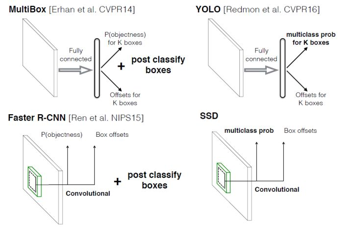
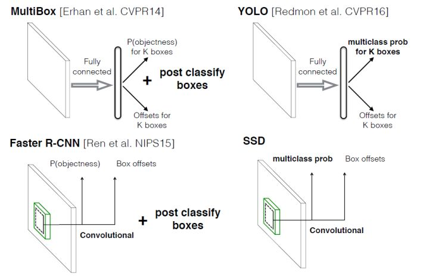

目标检测|SSD原理与实现
码字不易，欢迎给个赞！
欢迎交流与转载，文章会同步发布在公众号：机器学习算法全栈工程师(Jeemy110)
前言
目标检测近年来已经取得了很重要的进展，主流的算法主要分为两个类型（参考RefineDet）：（1）two-stage方法，如R-CNN系算法，其主要思路是先通过启发式方法（selective search）或者CNN网络（RPN)产生一系列稀疏的候选框，然后对这些候选框进行分类与回归，two-stage方法的优势是准确度高；（2）one-stage方法，如Yolo和SSD，其主要思路是均匀地在图片的不同位置进行密集抽样，抽样时可以采用不同尺度和长宽比，然后利用CNN提取特征后直接进行分类与回归，整个过程只需要一步，所以其优势是速度快，但是均匀的密集采样的一个重要缺点是训练比较困难，这主要是因为正样本与负样本（背景）极其不均衡（参见Focal Loss），导致模型准确度稍低。不同算法的性能如图1所示，可以看到两类方法在准确度和速度上的差异。


本文讲解的是SSD算法，其英文全名是Single Shot MultiBox Detector，名字取得不错，Single shot指明了SSD算法属于one-stage方法，MultiBox指明了SSD是多框预测。在上一篇文章中我们已经讲了Yolo算法，从图1也可以看到，SSD算法在准确度和速度（除了SSD512）上都比Yolo要好很多。图2给出了不同算法的基本框架图，对于Faster R-CNN，其先通过CNN得到候选框，然后再进行分类与回归，而Yolo与SSD可以一步到位完成检测。相比Yolo，SSD采用CNN来直接进行检测，而不是像Yolo那样在全连接层之后做检测。其实采用卷积直接做检测只是SSD相比Yolo的其中一个不同点，另外还有两个重要的改变，一是SSD提取了不同尺度的特征图来做检测，大尺度特征图（较靠前的特征图）可以用来检测小物体，而小尺度特征图（较靠后的特征图）用来检测大物体；二是SSD采用了不同尺度和长宽比的先验框（Prior boxes, Default boxes，在Faster R-CNN中叫做锚，Anchors）。Yolo算法缺点是难以检测小目标，而且定位不准，但是这几点重要改进使得SSD在一定程度上克服这些缺点。下面我们详细讲解SDD算法的原理，并最后给出如何用TensorFlow实现SSD算法。
 
设计理念
SSD和Yolo一样都是采用一个CNN网络来进行检测，但是却采用了多尺度的特征图，其基本架构如图3所示。下面将SSD核心设计理念总结为以下三点：


（1）采用多尺度特征图用于检测
所谓多尺度采用大小不同的特征图，CNN网络一般前面的特征图比较大，后面会逐渐采用stride=2的卷积或者pool来降低特征图大小，这正如图3所示，一个比较大的特征图和一个比较小的特征图，它们都用来做检测。这样做的好处是比较大的特征图来用来检测相对较小的目标，而小的特征图负责检测大目标，如图4所示，8x8的特征图可以划分更多的单元，但是其每个单元的先验框尺度比较小。

（2）采用卷积进行检测
与Yolo最后采用全连接层不同，SSD直接采用卷积对不同的特征图来进行提取检测结果。对于形状为 的特征图，只需要采用
这样比较小的卷积核得到检测值。
（3）设置先验框
在Yolo中，每个单元预测多个边界框，但是其都是相对这个单元本身（正方块），但是真实目标的形状是多变的，Yolo需要在训练过程中自适应目标的形状。而SSD借鉴了Faster R-CNN中anchor的理念，每个单元设置尺度或者长宽比不同的先验框，预测的边界框（bounding boxes）是以这些先验框为基准的，在一定程度上减少训练难度。一般情况下，每个单元会设置多个先验框，其尺度和长宽比存在差异，如图5所示，可以看到每个单元使用了4个不同的先验框，图片中猫和狗分别采用最适合它们形状的先验框来进行训练，后面会详细讲解训练过程中的先验框匹配原则。


SSD的检测值也与Yolo不太一样。对于每个单元的每个先验框，其都输出一套独立的检测值，对应一个边界框，主要分为两个部分。第一部分是各个类别的置信度或者评分，值得注意的是SSD将背景也当做了一个特殊的类别，如果检测目标共有 个类别，SSD其实需要预测
个置信度值，其中第一个置信度指的是不含目标或者属于背景的评分。后面当我们说
个类别置信度时，请记住里面包含背景那个特殊的类别，即真实的检测类别只有
个。在预测过程中，置信度最高的那个类别就是边界框所属的类别，特别地，当第一个置信度值最高时，表示边界框中并不包含目标。第二部分就是边界框的location，包含4个值
，分别表示边界框的中心坐标以及宽高。但是真实预测值其实只是边界框相对于先验框的转换值(paper里面说是offset，但是觉得transformation更合适，参见R-CNN)。先验框位置用
表示，其对应边界框用
$表示，那么边界框的预测值
其实是
相对于
的转换值：
习惯上，我们称上面这个过程为边界框的编码（encode），预测时，你需要反向这个过程，即进行解码（decode），从预测值 中得到边界框的真实位置
：
然而，在SSD的Caffe源码实现中还有trick，那就是设置variance超参数来调整检测值，通过bool参数variance_encoded_in_target来控制两种模式，当其为True时，表示variance被包含在预测值中，就是上面那种情况。但是如果是False（大部分采用这种方式，训练更容易？），就需要手动设置超参数variance，用来对 的4个值进行放缩，此时边界框需要这样解码：
综上所述，对于一个大小 的特征图，共有
个单元，每个单元设置的先验框数目记为
，那么每个单元共需要
个预测值，所有的单元共需要
个预测值，由于SSD采用卷积做检测，所以就需要
个卷积核完成这个特征图的检测过程。
网络结构
SSD采用VGG16作为基础模型，然后在VGG16的基础上新增了卷积层来获得更多的特征图以用于检测。SSD的网络结构如图5所示。上面是SSD模型，下面是Yolo模型，可以明显看到SSD利用了多尺度的特征图做检测。模型的输入图片大小是 （还可以是
，其与前者网络结构没有差别，只是最后新增一个卷积层，本文不再讨论）。


采用VGG16做基础模型，首先VGG16是在ILSVRC CLS-LOC数据集预训练。然后借鉴了DeepLab-LargeFOV，分别将VGG16的全连接层fc6和fc7转换成 卷积层 conv6和
卷积层conv7，同时将池化层pool5由原来的变成（猜想是不想reduce特征图大小），为了配合这种变化，采用了一种Atrous Algorithm，其实就是conv6采用扩展卷积或带孔卷积（Dilation Conv），其在不增加参数与模型复杂度的条件下指数级扩大卷积的视野，其使用扩张率(dilation rate)参数，来表示扩张的大小，如下图6所示，(a)是普通的
卷积，其视野就是
，(b)是扩张率为1，此时视野变成
，(c)扩张率为3时，视野扩大为
，但是视野的特征更稀疏了。Conv6采用
大小但dilation rate=6的扩展卷积。


然后移除dropout层和fc8层，并新增一系列卷积层，在检测数据集上做finetuing。
其中VGG16中的Conv4_3层将作为用于检测的第一个特征图。conv4_3层特征图大小是 ，但是该层比较靠前，其norm较大，所以在其后面增加了一个L2 Normalization层（参见ParseNet），以保证和后面的检测层差异不是很大，这个和Batch Normalization层不太一样，其仅仅是对每个像素点在channle维度做归一化，而Batch Normalization层是在[batch_size, width, height]三个维度上做归一化。归一化后一般设置一个可训练的放缩变量gamma，使用TF可以这样简单实现：
# l2norm (not bacth norm, spatial normalization)
def l2norm(x, scale, trainable=True, scope="L2Normalization"):
n_channels = x.get_shape().as_list()[-1]
l2_norm = tf.nn.l2_normalize(x, [3], epsilon=1e-12)
with tf.variable_scope(scope):
gamma = tf.get_variable("gamma", shape=[n_channels, ], dtype=tf.float32,
initializer=tf.constant_initializer(scale),
trainable=trainable)
return l2_norm * gamma
从后面新增的卷积层中提取Conv7，Conv8_2，Conv9_2，Conv10_2，Conv11_2作为检测所用的特征图，加上Conv4_3层，共提取了6个特征图，其大小分别是 ，但是不同特征图设置的先验框数目不同（同一个特征图上每个单元设置的先验框是相同的，这里的数目指的是一个单元的先验框数目）。先验框的设置，包括尺度（或者说大小）和长宽比两个方面。对于先验框的尺度，其遵守一个线性递增规则：随着特征图大小降低，先验框尺度线性增加：
其中 指的特征图个数，但却是
，因为第一层（Conv4_3层）是单独设置的，
表示先验框大小相对于图片的比例，而
和
表示比例的最小值与最大值，paper里面取0.2和0.9。对于第一个特征图，其先验框的尺度比例一般设置为
，那么尺度为
。对于后面的特征图，先验框尺度按照上面公式线性增加，但是先将尺度比例先扩大100倍，此时增长步长为
，这样各个特征图的
为
，将这些比例除以100，然后再乘以图片大小，可以得到各个特征图的尺度为
，这种计算方式是参考SSD的Caffe源码。综上，可以得到各个特征图的先验框尺度
。对于长宽比，一般选取
，对于特定的长宽比，按如下公式计算先验框的宽度与高度（后面的
均指的是先验框实际尺度，而不是尺度比例）：
默认情况下，每个特征图会有一个 且尺度为
的先验框，除此之外，还会设置一个尺度为
且
的先验框，这样每个特征图都设置了两个长宽比为1但大小不同的正方形先验框。注意最后一个特征图需要参考一个虚拟
来计算
。因此，每个特征图一共有
个先验框
，但是在实现时，Conv4_3，Conv10_2和Conv11_2层仅使用4个先验框，它们不使用长宽比为
的先验框。每个单元的先验框的中心点分布在各个单元的中心，即
，其中
为特征图的大小。
得到了特征图之后，需要对特征图进行卷积得到检测结果，图7给出了一个 大小的特征图的检测过程。其中Priorbox是得到先验框，前面已经介绍了生成规则。检测值包含两个部分：类别置信度和边界框位置，各采用一次
卷积来进行完成。令
为该特征图所采用的先验框数目，那么类别置信度需要的卷积核数量为
，而边界框位置需要的卷积核数量为
。由于每个先验框都会预测一个边界框，所以SSD300一共可以预测
个边界框，这是一个相当庞大的数字，所以说SSD本质上是密集采样。

训练过程
（1）先验框匹配
在训练过程中，首先要确定训练图片中的ground truth（真实目标）与哪个先验框来进行匹配，与之匹配的先验框所对应的边界框将负责预测它。在Yolo中，ground truth的中心落在哪个单元格，该单元格中与其IOU最大的边界框负责预测它。但是在SSD中却完全不一样，SSD的先验框与ground truth的匹配原则主要有两点。首先，对于图片中每个ground truth，找到与其IOU最大的先验框，该先验框与其匹配，这样，可以保证每个ground truth一定与某个先验框匹配。通常称与ground truth匹配的先验框为正样本（其实应该是先验框对应的预测box，不过由于是一一对应的就这样称呼了），反之，若一个先验框没有与任何ground truth进行匹配，那么该先验框只能与背景匹配，就是负样本。一个图片中ground truth是非常少的， 而先验框却很多，如果仅按第一个原则匹配，很多先验框会是负样本，正负样本极其不平衡，所以需要第二个原则。第二个原则是：对于剩余的未匹配先验框，若某个ground truth的 大于某个阈值（一般是0.5），那么该先验框也与这个ground truth进行匹配。这意味着某个ground truth可能与多个先验框匹配，这是可以的。但是反过来却不可以，因为一个先验框只能匹配一个ground truth，如果多个ground truth与某个先验框
大于阈值，那么先验框只与IOU最大的那个先验框进行匹配。第二个原则一定在第一个原则之后进行，仔细考虑一下这种情况，如果某个ground truth所对应最大
小于阈值，并且所匹配的先验框却与另外一个ground truth的
大于阈值，那么该先验框应该匹配谁，答案应该是前者，首先要确保某个ground truth一定有一个先验框与之匹配。但是，这种情况我觉得基本上是不存在的。由于先验框很多，某个ground truth的最大
肯定大于阈值，所以可能只实施第二个原则既可以了，这里的TensorFlow版本就是只实施了第二个原则，但是这里的Pytorch两个原则都实施了。图8为一个匹配示意图，其中绿色的GT是ground truth，红色为先验框，FP表示负样本，TP表示正样本。

尽管一个ground truth可以与多个先验框匹配，但是ground truth相对先验框还是太少了，所以负样本相对正样本会很多。为了保证正负样本尽量平衡，SSD采用了hard negative mining，就是对负样本进行抽样，抽样时按照置信度误差（预测背景的置信度越小，误差越大）进行降序排列，选取误差的较大的top-k作为训练的负样本，以保证正负样本比例接近1:3。
（2）损失函数
训练样本确定了，然后就是损失函数了。损失函数定义为位置误差（locatization loss， loc）与置信度误差（confidence loss, conf）的加权和：
其中 是先验框的正样本数量。这里
为一个指示参数，当
时表示第
个先验框与第
个ground truth匹配，并且ground truth的类别为
。
为类别置信度预测值。
为先验框的所对应边界框的位置预测值，而
是ground truth的位置参数。对于位置误差，其采用Smooth L1 loss，定义如下：


由于 的存在，所以位置误差仅针对正样本进行计算。值得注意的是，要先对ground truth的
进行编码得到
，因为预测值
也是编码值，若设置variance_encoded_in_target=True，编码时要加上variance：
对于置信度误差，其采用softmax loss:

权重系数 通过交叉验证设置为1。
（3）数据扩增
采用数据扩增（Data Augmentation）可以提升SSD的性能，主要采用的技术有水平翻转（horizontal flip），随机裁剪加颜色扭曲（random crop & color distortion），随机采集块域（Randomly sample a patch）（获取小目标训练样本），如下图所示：


其它的训练细节如学习速率的选择详见论文，这里不再赘述。
预测过程
预测过程比较简单，对于每个预测框，首先根据类别置信度确定其类别（置信度最大者）与置信度值，并过滤掉属于背景的预测框。然后根据置信度阈值（如0.5）过滤掉阈值较低的预测框。对于留下的预测框进行解码，根据先验框得到其真实的位置参数（解码后一般还需要做clip，防止预测框位置超出图片）。解码之后，一般需要根据置信度进行降序排列，然后仅保留top-k（如400）个预测框。最后就是进行NMS算法，过滤掉那些重叠度较大的预测框。最后剩余的预测框就是检测结果了。
性能评估
首先整体看一下SSD在VOC2007，VOC2012及COCO数据集上的性能，如表1所示。相比之下，SSD512的性能会更好一些。加*的表示使用了image expansion data augmentation（通过zoom out来创造小的训练样本）技巧来提升SSD在小目标上的检测效果，所以性能会有所提升。

SSD与其它检测算法的对比结果（在VOC2007数据集）如表2所示，基本可以看到，SSD与Faster R-CNN有同样的准确度，并且与Yolo具有同样较快地检测速度。

文章还对SSD的各个trick做了更为细致的分析，表3为不同的trick组合对SSD的性能影响，从表中可以得出如下结论：
- 数据扩增技术很重要，对于mAP的提升很大；
- 使用不同长宽比的先验框可以得到更好的结果；

同样的，采用多尺度的特征图用于检测也是至关重要的，这可以从表4中看出：

TensorFlow上的实现
SSD在很多框架上都有了开源的实现，这里基于balancap的TensorFlow版本来实现SSD的Inference过程。这里实现的是SSD300，与paper里面不同的是，这里采用 。首先定义SSD的参数：
self.ssd_params = SSDParams(img_shape=(300, 300), # 输入图片大小
num_classes=21, # 类别数+背景
no_annotation_label=21,
feat_layers=["block4", "block7", "block8", "block9", "block10", "block11"], # 要进行检测的特征图name
feat_shapes=[(38, 38), (19, 19), (10, 10), (5, 5), (3, 3), (1, 1)], # 特征图大小
anchor_size_bounds=[0.15, 0.90], # 特征图尺度范围
anchor_sizes=[(21., 45.),
(45., 99.),
(99., 153.),
(153., 207.),
(207., 261.),
(261., 315.)], # 不同特征图的先验框尺度（第一个值是s_k，第2个值是s_k+1）
anchor_ratios=[[2, .5],
[2, .5, 3, 1. / 3],
[2, .5, 3, 1. / 3],
[2, .5, 3, 1. / 3],
[2, .5],
[2, .5]], # 特征图先验框所采用的长宽比（每个特征图都有2个正方形先验框）
anchor_steps=[8, 16, 32, 64, 100, 300], # 特征图的单元大小
anchor_offset=0.5, # 偏移值，确定先验框中心
normalizations=[20, -1, -1, -1, -1, -1], # l2 norm
prior_scaling=[0.1, 0.1, 0.2, 0.2] # variance
)
然后构建整个网络，注意对于stride=2的conv不要使用TF自带的padding="same"，而是手动pad，这是为了与Caffe一致：
def _built_net(self):
"""Construct the SSD net"""
self.end_points = {} # record the detection layers output
self._images = tf.placeholder(tf.float32, shape=[None, self.ssd_params.img_shape[0],
self.ssd_params.img_shape[1], 3])
with tf.variable_scope("ssd_300_vgg"):
# original vgg layers
# block 1
net = conv2d(self._images, 64, 3, scope="conv1_1")
net = conv2d(net, 64, 3, scope="conv1_2")
self.end_points["block1"] = net
net = max_pool2d(net, 2, scope="pool1")
# block 2
net = conv2d(net, 128, 3, scope="conv2_1")
net = conv2d(net, 128, 3, scope="conv2_2")
self.end_points["block2"] = net
net = max_pool2d(net, 2, scope="pool2")
# block 3
net = conv2d(net, 256, 3, scope="conv3_1")
net = conv2d(net, 256, 3, scope="conv3_2")
net = conv2d(net, 256, 3, scope="conv3_3")
self.end_points["block3"] = net
net = max_pool2d(net, 2, scope="pool3")
# block 4
net = conv2d(net, 512, 3, scope="conv4_1")
net = conv2d(net, 512, 3, scope="conv4_2")
net = conv2d(net, 512, 3, scope="conv4_3")
self.end_points["block4"] = net
net = max_pool2d(net, 2, scope="pool4")
# block 5
net = conv2d(net, 512, 3, scope="conv5_1")
net = conv2d(net, 512, 3, scope="conv5_2")
net = conv2d(net, 512, 3, scope="conv5_3")
self.end_points["block5"] = net
print(net)
net = max_pool2d(net, 3, stride=1, scope="pool5")
print(net)
# additional SSD layers
# block 6: use dilate conv
net = conv2d(net, 1024, 3, dilation_rate=6, scope="conv6")
self.end_points["block6"] = net
#net = dropout(net, is_training=self.is_training)
# block 7
net = conv2d(net, 1024, 1, scope="conv7")
self.end_points["block7"] = net
# block 8
net = conv2d(net, 256, 1, scope="conv8_1x1")
net = conv2d(pad2d(net, 1), 512, 3, stride=2, scope="conv8_3x3",
padding="valid")
self.end_points["block8"] = net
# block 9
net = conv2d(net, 128, 1, scope="conv9_1x1")
net = conv2d(pad2d(net, 1), 256, 3, stride=2, scope="conv9_3x3",
padding="valid")
self.end_points["block9"] = net
# block 10
net = conv2d(net, 128, 1, scope="conv10_1x1")
net = conv2d(net, 256, 3, scope="conv10_3x3", padding="valid")
self.end_points["block10"] = net
# block 11
net = conv2d(net, 128, 1, scope="conv11_1x1")
net = conv2d(net, 256, 3, scope="conv11_3x3", padding="valid")
self.end_points["block11"] = net
# class and location predictions
predictions = []
logits = []
locations = []
for i, layer in enumerate(self.ssd_params.feat_layers):
cls, loc = ssd_multibox_layer(self.end_points[layer], self.ssd_params.num_classes,
self.ssd_params.anchor_sizes[i],
self.ssd_params.anchor_ratios[i],
self.ssd_params.normalizations[i], scope=layer+"_box")
predictions.append(tf.nn.softmax(cls))
logits.append(cls)
locations.append(loc)
return predictions, logits, locations
对于特征图的检测，这里单独定义了一个组合层ssd_multibox_layer，其主要是对特征图进行两次卷积，分别得到类别置信度与边界框位置：
# multibox layer: get class and location predicitions from detection layer
def ssd_multibox_layer(x, num_classes, sizes, ratios, normalization=-1, scope="multibox"):
pre_shape = x.get_shape().as_list()[1:-1]
pre_shape = [-1] + pre_shape
with tf.variable_scope(scope):
# l2 norm
if normalization > 0:
x = l2norm(x, normalization)
print(x)
# numbers of anchors
n_anchors = len(sizes) + len(ratios)
# location predictions
loc_pred = conv2d(x, n_anchors*4, 3, activation=None, scope="conv_loc")
loc_pred = tf.reshape(loc_pred, pre_shape + [n_anchors, 4])
# class prediction
cls_pred = conv2d(x, n_anchors*num_classes, 3, activation=None, scope="conv_cls")
cls_pred = tf.reshape(cls_pred, pre_shape + [n_anchors, num_classes])
return cls_pred, loc_pred
对于先验框，可以基于numpy生成，定义在ssd_anchors.py文件中，结合先验框与检测值，对边界框进行过滤与解码：
classes, scores, bboxes = self._bboxes_select(predictions, locations)
这里将得到过滤得到的边界框，其中classes, scores, bboxes分别表示类别，置信度值以及边界框位置。
基于训练好的权重文件在这里下载，这里对SSD进行测试：
ssd_net = SSD()
classes, scores, bboxes = ssd_net.detections()
images = ssd_net.images()
sess = tf.Session()
# Restore SSD model.
ckpt_filename = './ssd_checkpoints/ssd_vgg_300_weights.ckpt'
sess.run(tf.global_variables_initializer())
saver = tf.train.Saver()
saver.restore(sess, ckpt_filename)
img = cv2.imread('./demo/dog.jpg')
img = cv2.cvtColor(img, cv2.COLOR_BGR2RGB)
img_prepocessed = preprocess_image(img) # 预处理图片，主要是归一化和resize
rclasses, rscores, rbboxes = sess.run([classes, scores, bboxes],
feed_dict={images: img_prepocessed})
rclasses, rscores, rbboxes = process_bboxes(rclasses, rscores, rbboxes) # 处理预测框，包括clip,sort,nms
plt_bboxes(img, rclasses, rscores, rbboxes) # 绘制检测结果
详细的代码放在GitHub上了，然后看一下一个自然图片的检测效果：

如果你想实现SSD的train过程，你可以参考附录里面的Caffe,TensorFlow以及Pytorch实现。
小结
SSD在Yolo的基础上主要改进了三点：多尺度特征图，利用卷积进行检测，设置先验框。这使得SSD在准确度上比Yolo更好，而且对于小目标检测效果也相对好一点。由于很多实现细节都包含在源码里面，文中有描述不准或者错误的地方在所难免，欢迎交流指正。
参考文献
- SSD: Single Shot MultiBox Detector
- SSD Slide
- SSD Caffe
- SSD TensorFlow
- SSD Pytorch
- leonardoaraujosantos Artificial Inteligence online book
码字不易，欢迎给个赞！
欢迎交流与转载，文章会同步发布在公众号：机器学习算法全栈工程师(Jeemy110)
![[目标检测]SSD：Single Shot MultiBox Detector](./目标检测_SSD原理与实现_files/v2-8c822630b8cb57a830042530aaa25f75_250x0.jpg)
85 条评论
强
先点个赞，问下在priorbox layer中的step是什么？我看了caffe SSD源码，step_w, step_h用来求center，最后求xmin, ymin, xmax, ymax，这个step是给定好的吗？还是需要根据feature map的大小来计算对应的step?
讲的很细致，赞
这个在caffe ssd源码里面有对应实现吗？
是的，参见https://github.com/weiliu89/caffe/blob/ssd/src/caffe/util/bbox_util.cpp，就是找到最大的maximum overlap，但是如果这个prior box已经在第一阶段分配了ground truth，就不再第二阶段处理了。
Pytorch里面是计算每个ground truth与prior box的overlap，然后计算每个ground truth的最大overlap对应的prior box，然后再计算每个prior box最大overlap对应的ground truth，然后用前者覆盖后者，以保证前者，参见https://github.com/amdegroot/ssd.pytorch/blob/master/layers/box_utils.py
代码比较多，我也只能看个大概，但是应该是这个意思
yolo v2的anchor和ssd的不太一样。yolo v2的box match是先确定中心落在哪个grid里面，然后从这个grid里面的5个anchor选出和ground truth形状最接近的那个做匹配。grid里面的anchor并没有具体的位置。
推荐看一下densebox，似乎是比yolo ssd retinanet出来的都早，而且这三篇里面用到的技术densebox都有。。作者就在知乎上
SSD的网络结构如图6所示 这里应该是图5
hard negative mining这里是不是说错了啊。应该是把背景置信度的作为负样本吧？
就你的原话是"抽样时按照置信度误差（预测背景的置信度越小，误差越大）进行降序排列，选取误差的较大的top-k作为训练的负样本”，这句话的意思不就是说把置信度低的前几个作为负样本么，可是既然要作为背景的话应该是要让背景置信度高的作为负样本吧？